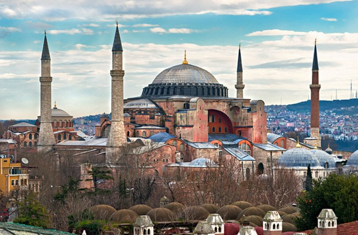
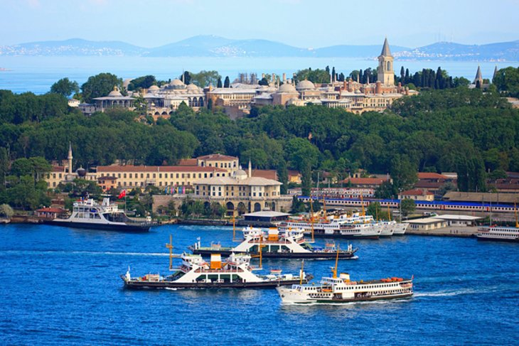
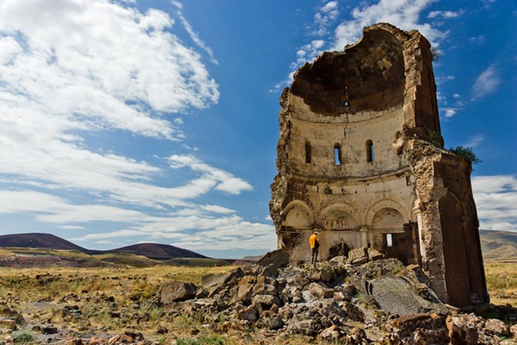

Turkey
Turkey
Turkey (Turkish: Türkiye ), officially the Republic of Turkey,is a country bridging Europe and Asia. It shares borders with Greece and Bulgaria to the northwest; the Black Sea to the north; Georgia to the northeast; Armenia, Azerbaijan, and Iran to the east; Iraq to the southeast; Syria and the Mediterranean Sea to the south; and the Aegean Sea to the west. Turks form the vast majority of the nation's population and Kurds are the largest minority.Turkey's capital is Ankara while its largest city and financial centre is Istanbul. One of the world's earliest permanently settled regions, present-day Turkey was home to important Neolithic sites like Göbekli Tepe, and was inhabited by ancient civilisations including the Hattians and Anatolian peoples.Hellenization started in the area during the era of Alexander the Great and continued into the Byzantine era.The Seljuk Turks began migrating in the 11th century, and the Sultanate of Rum ruled Anatolia until the Mongol invasion in 1243, when it disintegrated into small Turkish principalities.Beginning in the late 13th century, the Ottomans started uniting the principalities and conquering the Balkans, and the Turkification of Anatolia increased during the Ottoman period. After Mehmed II conquered Constantinople in 1453, Ottoman expansion continued under Selim I. During the reign of Suleiman the Magnificent, the Ottoman Empire became a global power.From the late 18th century onwards, the empire's power declined with a gradual loss of territories and wars.[
How to Get There
-How to Reach Turkey by Sea
Ferries no longer run from Italy direct to Turkey, but it’s possible to take a ferry from either Ancona, Brindisi or Bari to Patras in Greece, and make your way by road or rail to Athens (Piraeus). Regular ferries sail from there to several Greek islands that are linked by further ferries to Turkey. Useful websites for information on Italy–Greece services include w feribot.net and w directferries.co.uk. Ferries and catamarans from Greece Many travellers take the short-hop ferries or catamarans over from the Greek islands of Lésvos, Híos, Sámos, Kós, Kastellorizo/Meis, Sými and Rhodes to the respective Turkish ports of Ayvalık, Foça, Çeşme, Kuşadası, Datça, Bodrum, Kaş, Marmaris and Fethiye. Services are daily in season (early May to early Oct) and, except for the Fethiye-Foça- and Datça-based services, still run after a fashion in winter, though you may have to wait five to seven days between departures. Although fares have dipped slightly in recent years, they’re still overpriced for the distances involved; full details of every service are given at the relevant points in this guide. At the time of writing car-shuttle services serve all the above Turkish ports except Foça, Fethiye, Kaş and to a degree Kuşadası, which only has one semi-reliable service weekly.-How to Reach Turkey by Air
Travelling to Turkey by train is slow and expensive. It only makes sense if you are a rail buff or wish to visit several other countries en route. The best route from the UK begins with the Eurostar (w eurostar.com) service from London Waterloo to Paris, then an overnight sleeper to Munich, followed by a daytime Euro-City departure to Budapest, and finally two more nights aboard a sleeper to İstanbul (including a change of engine in Bucharest), making a total journey of five days and four nights.-How to Reach Turkey by Road
You can drive from the UK to Turkey in three to four days. However, this allows little time for stopping and sleeping, and most travellers prefer to do it more slowly, taking in a few places en route. For customs formalities and car insurance cover once in Turkey, see “Getting around”. The all-land itinerary goes via Belgium, Germany, Austria, Hungary, Romania and Bulgaria, though a more relaxing if less direct route is through France, Italy and Greece.-How to Reach Turkey by Train
Travelling to Turkey by train is slow and expensive. It only makes sense if you are a rail buff or wish to visit several other countries en route. The best route from the UK begins with the Eurostar (w eurostar.com) service from London Waterloo to Paris, then an overnight sleeper to Munich, followed by a daytime Euro-City departure to Budapest, and finally two more nights aboard a sleeper to İstanbul (including a change of engine in Bucharest), making a total journey of five days and four nights.
Places to Visit
- Aya Sofya 
- Ephesus
- Topkapi Palace 
- Pamukkale
- Ani 